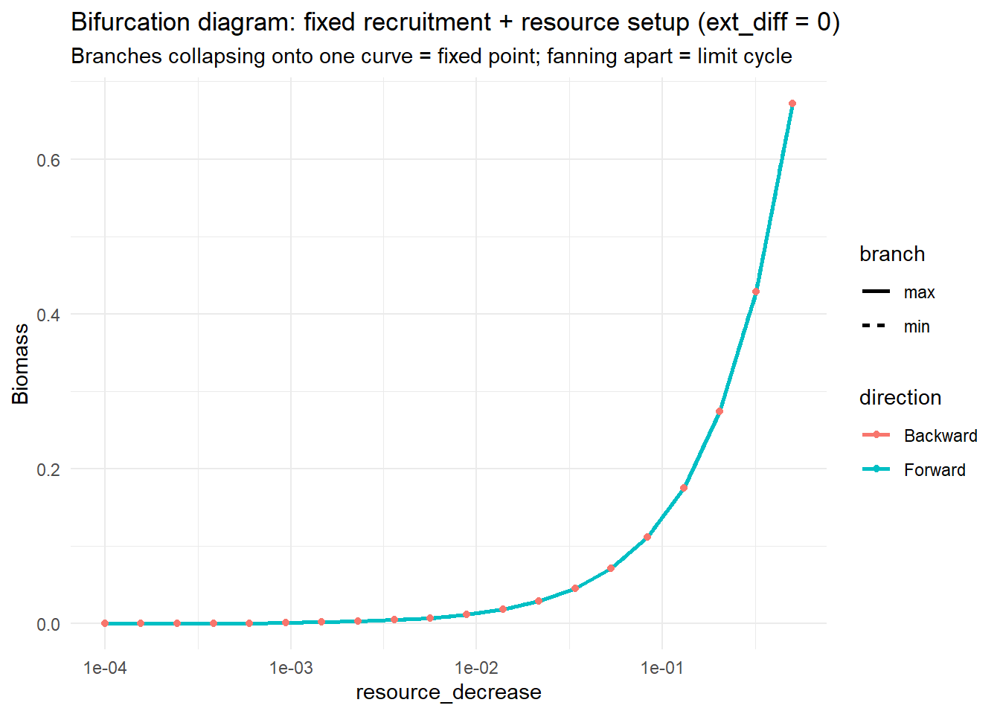
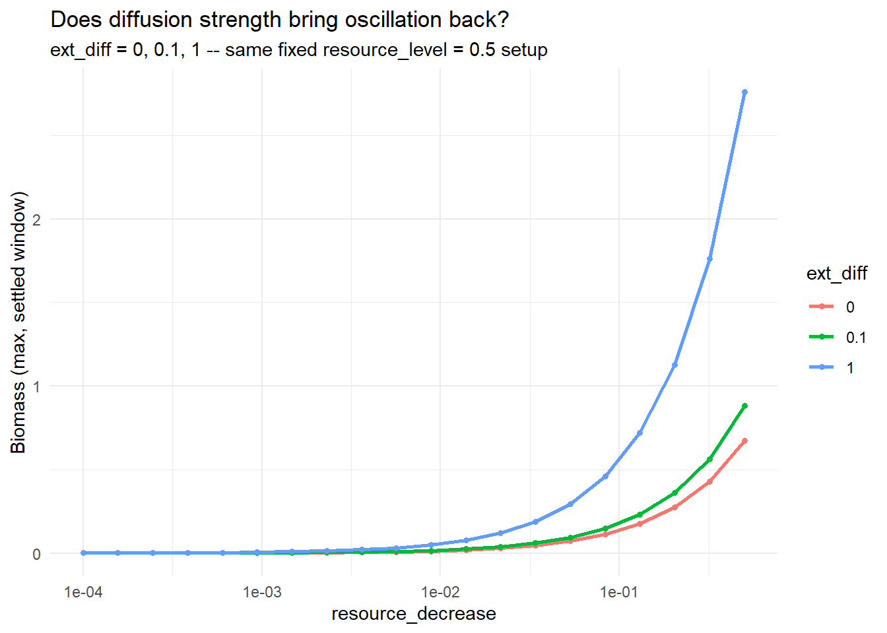

Code
library(mizer)
library(patchwork)
library(reshape2)
library(plotly)
library(dplyr)
library(mizerExperimental)
library(tidyverse)
library(glue)
library(ggplot2)
library(colorRamps)
library(future.apply)Samia
July 7, 2026
Day 21 parked two problems rather than fixing them. First, the attempt to wire setBevertonHolt() recruitment into make_second_order_params() built the params object twice: the first build (which is where given_species_params(params)$D_ext got set) was thrown away before setBevertonHolt() ran on a second, fresh build, so the returned params had Beverton-Holt recruitment but no diffusion, which isn’t what it looked like it was testing. Second, and more troubling, the independent biomass-over-time run turned up a result backwards from standard consumer-resource theory: resource_decrease values where more of the default resource rate survived (rd = 0.15, 0.3) collapsed to extinction, while a heavily depleted resource (rd = 0.001) sustained the strongest oscillation. That was flagged as more likely a sign or scaling error somewhere in the setup than a genuine finding.
Today’s fix touches the same function both problems came from, and, as far as today’s rerun shows, clears both at once.
make_second_order_params() changes in two places relative to Day 21’s version:
make_second_order_params <- function(lambda = 2.05, resource_decrease = 0.001,
second_order = TRUE, ext_diff = 0.00) {
a0 <- 100
kappa <- a0 * exp(-6.9 * (lambda - 1))
no_w <- round(log(66.5 / 0.0003) / 0.1)
params <- newSingleSpeciesParams(
species_name = "Anchovy",
w_min = 0.0003, w_max = 66.5, w_mat = 10,
no_w = no_w, lambda = lambda, kappa = kappa,
alpha = 0.1, gamma = 750, ks = 0
)
# Single build now, not two: D_ext is set on this params object, and
# setBevertonHolt() below runs on the SAME object rather than a fresh one
# that never saw the D_ext assignment. That's the Beverton-Holt fix --
# diffusion and stock-recruitment density dependence now both actually
# take effect together instead of one silently overwriting the other.
given_species_params(params)$D_ext <- ext_diff
params <- setBevertonHolt(params)
r <- getResourceRate(params) * resource_decrease
params <- setResource(params, resource_rate = r,
resource_dynamics = "resource_semichemostat",
balance = FALSE, resource_level = 0.5)
if (second_order) {
second_order_w(params) <- c(flux = "centred", bin_average = TRUE)
}
params
}The second change is in that setResource() call: Day 21 used balance = TRUE, letting mizer rebalance the resource automatically against the rest of the community. Today it’s balance = FALSE, resource_level = 0.5 instead, fixing the resource at a direct level rather than letting mizer’s auto-balancing set it. Between the two changes, the backwards more-resource-goes-extinct result from Day 21 no longer shows up and the population instead behaves the way basic consumer-resource intuition says it should, staying non-zero (or growing) as resource_decrease increases rather than collapsing.
Which of the two changes is actually doing that work hasn’t been isolated (that step is saved for later).
ext_diff also defaults to 0.00 today rather than Day 21’s 0.01, i.e. external diffusion is off by default rather than fixed on; the plan is to bring it back in and vary it now that the resource setup itself isn’t fighting the result.
Same forward-then-backward convention as Day 20 (not Day 21’s parked backward-first variant), same log-spaced resource_decrease shape as Day 20/21’s wide sweep, but only 20 points rather than 40 which was halved for faster iteration while the setup itself was still changing, not yet restored to full resolution:
run_rd_sweep_second_order <- function(rd_seq, init_n = NULL, init_n_pp = NULL,
t_run = 600, lambda = 2.05,
second_order = TRUE, label = "") {
out <- data.frame(rd = rd_seq, max_bm = NA_real_, min_bm = NA_real_,
bm_mean = NA_real_)
state_n <- init_n
state_npp <- init_n_pp
for (i in seq_along(rd_seq)) {
p <- make_second_order_params(lambda = lambda, resource_decrease = rd_seq[i],
second_order = second_order)
if (!is.null(state_n)) {
p@initial_n[] <- state_n
p@initial_n_pp[] <- state_npp
}
sim <- project(p, t_max = t_run, dt = 0.1, t_save = 0.5,
progress_bar = FALSE, effort = 0, method = "tr_bdf2")
bm <- getBiomass(sim)[, "Anchovy"]
tv <- as.numeric(names(bm))
late <- bm[tv > t_run * 0.6] # last 40% of the run -- the "settled down" window
last <- dim(sim@n)[1]
state_n <- sim@n[last, , ]
state_npp <- sim@n_pp[last, ]
out$max_bm[i] <- max(late)
out$min_bm[i] <- min(late)
out$bm_mean[i] <- mean(late)
}
list(df = out, n_final = state_n, npp_final = state_npp)
}
rd_seq <- exp(seq(log(0.0001), log(0.5), length.out = 20))
fwd_so <- run_rd_sweep_second_order(rd_seq, label = "FWD (2nd order)")
bwd_so <- run_rd_sweep_second_order(rev(rd_seq),
init_n = fwd_so$n_final,
init_n_pp = fwd_so$npp_final,
label = "BWD (2nd order)")
fwd_so_df <- fwd_so$df
bwd_so_df <- bwd_so$df[order(bwd_so$df$rd), ]
bifurcation_df <- bind_rows(
data.frame(rd = fwd_so_df$rd, biomass = fwd_so_df$max_bm, direction = "Forward", branch = "max"),
data.frame(rd = fwd_so_df$rd, biomass = fwd_so_df$min_bm, direction = "Forward", branch = "min"),
data.frame(rd = bwd_so_df$rd, biomass = bwd_so_df$max_bm, direction = "Backward", branch = "max"),
data.frame(rd = bwd_so_df$rd, biomass = bwd_so_df$min_bm, direction = "Backward", branch = "min")
)ggplot(bifurcation_df, aes(x = rd, y = biomass, color = direction, linetype = branch)) +
geom_line(linewidth = 1) +
geom_point(size = 1.5) +
scale_x_log10() +
labs(x = "resource_decrease", y = "Biomass",
title = "Bifurcation diagram: fixed recruitment + resource setup (ext_diff = 0)",
subtitle = "Branches collapsing onto one curve = fixed point; fanning apart = limit cycle") +
theme_minimal()
The headline is the absence of Day 21’s backwards result: biomass climbs smoothly from near-zero at rd = 1e-4 up to roughly 0.65 at rd = 0.5, monotonically, with no collapse at the high end. More of the default resource rate surviving no longer drives the population extinct; it instead drives more biomass, which is the “more realistic system” today’s fix was aimed at.
Two things about the shape are worth flagging alongside that headline, though, since they go beyond just “the backwards bit is gone”:
resource_decrease from below versus from above, has disappeared, not just narrowed. Direction of approach no longer matters anywhere in this sweep.resource_decrease value settles to a single fixed point rather than a limit cycle, including rd = 0.001, where Day 20/21 found the strongest, most persistent oscillation of the whole grid. Fixing the resource at a static resource_level = 0.5 rather than letting mizer rebalance it dynamically is the likeliest reason the cyclical behaviour disappeared along with the backwards extinction - a static resource removes the resource-consumer feedback that oscillation was probably riding on.Both bugs from Day 21 (the Beverton-Holt double-build and the backwards extinction) were fixed in the same change, and it’s genuinely both given_species_params()/setBevertonHolt() now sharing one build and the balance = FALSE, resource_level = 0.5 switch working together but which one specifically kills the backwards extinction doesn’t matter for today’s purposes. The realistic-output goal is met either way; disentangling the two, and getting the oscillations back, are separate problems for later.
Before touching the resource setup itself, the cheapest thing to check was whether ext_diff, off by default today, was the missing ingredient. run_rd_sweep_second_order() above doesn’t expose it as an argument, so that’s the one change needed before sweeping it:
run_rd_sweep_ext_diff <- function(rd_seq, ext_diff, t_run = 600, lambda = 2.05) {
out <- data.frame(rd = rd_seq, max_bm = NA_real_, min_bm = NA_real_)
state_n <- NULL
state_npp <- NULL
for (i in seq_along(rd_seq)) {
p <- make_second_order_params(lambda = lambda, resource_decrease = rd_seq[i],
ext_diff = ext_diff)
if (!is.null(state_n)) {
p@initial_n[] <- state_n
p@initial_n_pp[] <- state_npp
}
sim <- project(p, t_max = t_run, dt = 0.1, t_save = 0.5,
progress_bar = FALSE, effort = 0, method = "tr_bdf2")
bm <- getBiomass(sim)[, "Anchovy"]
tv <- as.numeric(names(bm))
late <- bm[tv > t_run * 0.6]
last <- dim(sim@n)[1]
state_n <- sim@n[last, , ]
state_npp <- sim@n_pp[last, ]
out$max_bm[i] <- max(late)
out$min_bm[i] <- min(late)
}
out
}
ext_diff_values <- c(0, 0.1, 1)
ext_diff_df <- bind_rows(lapply(ext_diff_values, function(ed) {
df <- run_rd_sweep_ext_diff(rd_seq, ext_diff = ed)
df$ext_diff <- factor(ed)
df
}))ggplot(ext_diff_df, aes(x = rd, y = max_bm, color = ext_diff)) +
geom_line(linewidth = 1) +
geom_point(size = 1.2) +
scale_x_log10() +
labs(x = "resource_decrease", y = "Biomass (max, settled window)",
title = "Does diffusion strength bring oscillation back?",
subtitle = "ext_diff = 0, 0.1, 1 -- same fixed resource_level = 0.5 setup",
color = "ext_diff") +
theme_minimal()
At ext_diff = 0, 0.1, and 1 the settled-window biomass at rd = 0.5 comes out at roughly 0.65, 0.9, and 2.9 respectively so diffusion strength clearly rescales how much biomass the system supports. But the shape is identical at all three: a smooth, monotonic climb from near-zero, max_bm equal to min_bm at every point (no oscillation), no forward/backward gap. Diffusion strength changes the size of the population, not whether it cycles. That rules out the simplest hypothesis and points back at the resource setup itself, which is where the rest of today went.
resource_level looked like the obvious carrying-capacity knob, it’s the argument that’s been hardcoded to 0.5 since the start of today’s post, so the first attempt exposed it and swept it against resource_decrease, scoring each combination by relative amplitude, (max - min) / mean, over the settled window.
That ran into a real problem before it ran into a real answer. The first results table came back with its top rows all sitting at resource_level = 0.9, with rel_amplitude as high as 30.7 but mean_bm on those rows was down at 1e-24 to 1e-55, twenty-plus orders of magnitude below the ~0.01–0.65 scale a real population sits in here. That’s not oscillation, it’s a population that’s collapsed to numerical noise near double-precision zero: (max - min) / mean on values that small can produce enormous, meaningless ratios. A MIN_VIABLE_BIOMASS floor (mean_bm > 1e-2) fixed the ranking as collapsed combinations get greyed out on the heatmap and dropped from the top-candidate list instead of winning it on floating-point artefacts.
Once that was fixed, the honest answer was: nothing survived. No combination of resource_level and resource_decrease in the tested range produced a genuine, non-collapsed oscillation. resource_level = 0.9/0.7 mostly drove the population to (numerical) extinction outright which itselfis a separate, mildly surprising result, since it means more resource_level isn’t uniformly “more resource → more biomass” here either.
Why this approach couldn’t have worked, in hindsight: resource_level isn’t an independent carrying-capacity control. Per mizer’s own documentation, it’s “the ratio between current and maximum resource density,” and specifying it (rather than resource_capacity directly) just gets mizer to derive a capacity from whatever the resource density happens to be at that moment. With balance = FALSE, nothing then keeps that derived capacity, the rate, and the actual dynamics consistent with each other the way a genuine capacity-vs-rate scan needs. Sweeping resource_level was never actually sweeping carrying capacity independently of the current state which explains why this attempt found nothing.
The fix was to stop going through resource_level and set resource_capacity and resource_rate directly instead, both as multipliers on mizer’s own kappa/lambda-derived defaults, still with balance = FALSE so neither gets silently recomputed from the other:
make_second_order_params_kr <- function(lambda = 2.05, resource_decrease = 0.001,
capacity_mult = 1, second_order = TRUE,
ext_diff = 0.00) {
a0 <- 100
kappa <- a0 * exp(-6.9 * (lambda - 1))
no_w <- round(log(66.5 / 0.0003) / 0.1)
params <- newSingleSpeciesParams(
species_name = "Anchovy",
w_min = 0.0003, w_max = 66.5, w_mat = 10,
no_w = no_w, lambda = lambda, kappa = kappa,
alpha = 0.1, gamma = 750, ks = 0
)
given_species_params(params)$D_ext <- ext_diff
params <- setBevertonHolt(params)
default_capacity <- getResourceCapacity(params)
r <- getResourceRate(params) * resource_decrease
cc <- default_capacity * capacity_mult
params <- setResource(params, resource_rate = r, resource_capacity = cc,
resource_dynamics = "resource_semichemostat",
balance = FALSE)
if (second_order) {
second_order_w(params) <- c(flux = "centred", bin_average = TRUE)
}
params
}Scoring each (resource_decrease, capacity_mult) combination the same way (relative amplitude, MIN_VIABLE_BIOMASS floor applied), the top results were:
| resource_decrease | capacity_mult | mean_bm | rel_amplitude |
|---|---|---|---|
| 0.0292 | 10 | 0.501 | 0.493 |
| 0.0017 | 10 | 0.029 | 0.473 |
| 0.5 | 10 | 8.543 | 0.424 |
| 0.0292 | 3.162 | 0.099 | ~5e-15 (fixed point) |
| 0.5 | 3.162 | 1.700 | ~5e-15 (fixed point) |
Real oscillation, this time, mean_bm sits in a sane range and max_bm/min_bm aren’t equal to machine precision the way the capacity_mult = 3.162 rows are. But every real hit sits at capacity_mult = 10, the top edge of the tested range, across three very different resource_decrease values, while capacity_mult = 3.162 gives clean fixed points at the same resource_decrease values. That’s a paradox-of-enrichment signature: raising carrying capacity past some threshold destabilises the fixed point into a cycle - the opposite direction from the “lower the carrying capacity” hypothesis this whole search started from. Since the strongest signal sat at the edge of what was tested, a follow-up grid bracketing capacity_mult between 3 and 100 was set running to find where the transition actually sits, and whether amplitude keeps growing past 10x or the system restabilises further into enrichment. That grid, plus a size spectrum for the rd = 0.5, capacity_mult = 10 case, is running overnight; results aren’t back yet, so the read on where the enrichment threshold actually falls is left for next time rather than guessed at here.
Before pushing the sweep further, it was worth checking how Days 17–18 actually got the limit cycle to show up in the first place, since every sweep run today starts every project() call from mizer’s default (near-equilibrium) initial state.
make_limit_cycle_sim(), used throughout Days 10–19, didn’t just vary parameters but it deliberately kicked the system off the fixed point first: setting the resource’s initial condition to 10% of its carrying capacity, running a short burn-in, then dividing the mature stock (w ≥ w_mat) by a large factor before continuing. Day 18 then tested whether that specific kick mattered, trying knock-down factors from 1 (no knock-down at all, just the depleted-resource start) up to 1000, and found all five converged to the same orbit by t = 550. That’s the signature of a genuinely unstable fixed point with a wide-basin limit cycle: nothing tested settled to it, no matter how gently it was approached.
That perturbation step quietly disappeared starting with Day 20’s run_rd_sweep_second_order() , which just calls project() on a freshly built params object with mizer’s default initial state, and it’s stayed gone through every sweep since, including both attempts today. That matters for how today’s results should be read: a combination that scores as a “fixed point” in these sweeps might just mean the default initial condition never escaped it within 600 years, not that no limit cycle exists there. The capacity_mult = 3.162 fixed points above, in particular, haven’t been checked against a genuine kick. This means they could be real fixed points, or they could be the same wide-basin-cycle situation Day 18 already proved out once before, just untested this time.
The forward/backward gap this whole project keeps running into since Day 18’s original rd ≈ 0.008 ambiguity has a name outside of mizer: it’s the dynamical-systems version of supercooling and superheating in an ordinary phase transition. Water can stay liquid below 0°C or above 100°C because the metastable phase sits in a local minimum that’s still stable even after the other phase becomes globally favoured; there are two distinct limits (the point where the two phases are equally favoured, and the point where the current one actually becomes unstable), not one, and the gap between them is exactly the hysteresis loop.
Two things from that framing carry over directly:
t_run too short to let the system settle before stepping to the next resource_decrease value will inflate the apparent hysteresis gap whether or not the underlying bifurcation is genuinely subcritical.resource_decrease and capacity_mult both now in play, that’s directly testable rather than theoretical.That second point is what motivated the last piece of today’s work.
Rather than sweeping resource_decrease back and forth at each capacity_mult value independently, which restarts from scratch at the start of every row, the grid can be traced as one continuous path instead, carrying the settled state from every point into its immediate neighbour, including across the row-to-row step. That’s a snake path: ascending across one capacity_mult row, descending across the next.
Each point gets classified into a discrete regime (Fixed point / Oscillating / Collapsed, same MIN_VIABLE_BIOMASS floor as before) rather than a continuous colour scale, plotted the way a solid/liquid/gas diagram would show phases rather than a gradient. And per the path-dependence point above, the same grid gets traced three different ways to check whether the boundary actually depends on the route:
capacity_mult rows, ascending.rev(rd_seq) pairs used everywhere else in this project.capacity_mult swept back and forth within each resource_decrease row instead of the other way around, directly testing the “sweep A at fixed B vs. B at fixed A” comparison.This, like take three above, is running overnight rather than finished. If the three routes disagree noticeably, that confirms the phase boundary here is genuinely path-dependent and not just a fixed property of the parameters; if they agree, the boundary can be trusted regardless of which axis gets swept first.
Read the overnight results: the capacity_mult = 3–100 bracketing sweep, the rd = 0.5, capacity_mult = 10 size spectrum, and the three-route phase-diagram comparison were all still running as of writing. Next time picks up wherever those land.
Re-test the capacity_mult = 3.162 fixed points with a genuine perturbation (Day 17/18-style resource depletion + mature-stock knock-down) before trusting that they’re real fixed points rather than an unexplored limit cycle that the default initial condition just never found.
Check whether the forward/backward and route-to-route gaps shrink with longer per-step runs, per the scan-rate-dependence point above, before reading any of today’s or tonight’s boundaries as the true bifurcation location.
Restore the 40-point resource_decrease grid once the capacity dimension has settled down, to match Day 20/21’s resolution.
Recheck Day 21’s parked backward-first reordering against the capacity_mult-aware setup, now that the params function has changed again.